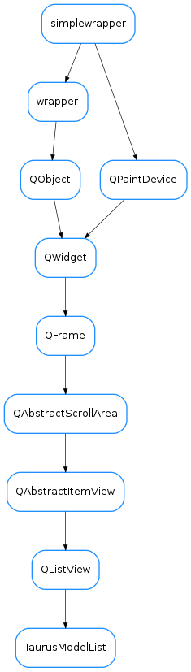

TaurusModelList¶

-
class
TaurusModelList(parent=None, items=None, designMode=False)[source]¶ Bases:
PyQt4.QtGui.QListViewA list view widget to display and manage a list of models
Tries to identify the type of model and show the state of the device/attr associated with it. It also allows drag and drop of models and sorting.
-
addModels(models)[source]¶ adds models to the list
Parameters: models ( list<str>) – sequence of model names to be added
-
dataChangedSignal¶
-
getModelItems()[source]¶ returns the model item objects
Return type: list<TaurusModelItem>Returns: See also
-
getModelList()[source]¶ returns a the model names corresponding to the items in the list
Return type: list<str>Returns: See also
-